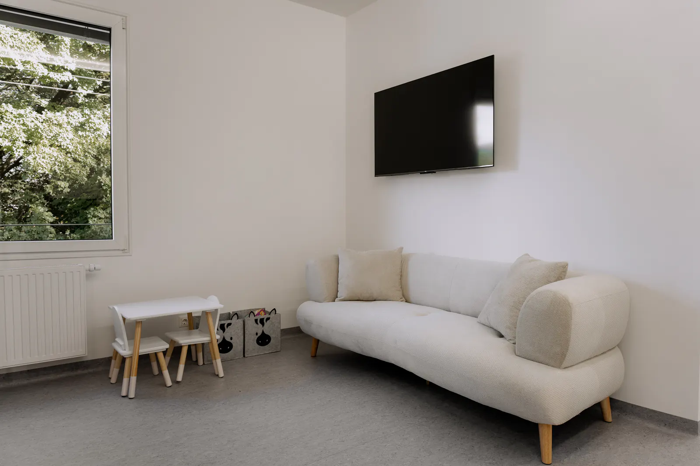

Die Kinderzahnheilkunde ist ein besonderer Bereich der Zahnmedizin, da sie sich mit der Behandlung von Kindern und Jugendlichen im Alter von 1 bis 18 Jahren beschäftigt.
Auf einen Blick
Altersgerecht
Die Betreuung wird an Alter und Entwicklungsstand angepasst.
Früh erkennen
Regelmäßige Kontrollen helfen, Veränderungen rechtzeitig zu erkennen.
Gemeinsam
Kind, Eltern und Zahnärztin bilden ein Team.
Jede Phase der Zahnentwicklung
In diesem Lebensabschnitt durchlaufen Kinder verschiedene Phasen der Zahnentwicklung: von der zahnlosen Zeit über den Durchbruch der Milchzähne und das vollständige Milchgebiss bis hin zum Zahnwechsel und zur Entwicklung des bleibenden Gebisses.
Zahnlose Zeit
Durchbruch der Milchzähne
Vollständiges Milchgebiss
Zahnwechsel
ab ca. 6 JahrenBleibendes Gebiss
meist ab ca. 14 Jahren
Etwa ab dem sechsten Lebensjahr beginnt die Wechselgebissphase, in der die ersten bleibenden Zähne durchbrechen. Bis zum 14. Lebensjahr haben die meisten Jugendlichen bereits alle Milchzähne verloren, wobei es natürlich auch individuelle Abweichungen geben kann.
Da sich Kinder und Jugendliche in diesen 18 Jahren sowohl körperlich als auch psychisch stark entwickeln und verändern, ist es besonders wichtig, die zahnmedizinische Betreuung stets an das jeweilige Alter, den Entwicklungsstand und die individuelle Situation im Mund anzupassen.

Vorsorge und regelmäßige Kontrollen
Ein frühzeitiger erster Zahnarztbesuch ermöglicht es uns, Eltern über eine zahngesunde Ernährung, altersgerechte Mundhygiene und die richtige Zahnpflege bei Kindern zu informieren.
Durch regelmäßige Kontrolluntersuchungen können beginnende Karies und andere Veränderungen frühzeitig erkannt werden. Darüber hinaus können bei den Kontrolluntersuchungen rechtzeitig erkannt werden:
- Fehlende Zahnanlagen
- Zähne ohne bleibende Nachfolger
- Entwicklungsstörungen der Kiefer
- Ein möglicher kieferorthopädischer Behandlungsbedarf
Wenn ein Unfall passiert
Natürlich gehören auch kleine und größere Unfälle zum Alltag von Kindern – sei es ein Sturz vom Fahrrad oder ein Unfall am Spielplatz. Je nach Art und Schwere der Verletzung sowie der Beteiligung von Weich- und Hartgewebe ist eine rasche zahnärztliche Versorgung entscheidend.
Beschädigte Zähne sollten möglichst zeitnah versorgt und ausgeschlagene bleibende Zähne – sofern möglich – schnellstmöglich wieder in ihre ursprüngliche Position im Zahnfach (Alveole) eingesetzt werden. Dadurch können mögliche Folgeschäden und langfristige Komplikationen reduziert werden.
In dringenden Fällen rufen Sie uns bitte während der Öffnungszeiten an: +43 660 634 1421
Gemeinsam für gesunde Kinderzähne
In der Kinderzahnheilkunde stehen für uns die Aufklärung und die Zusammenarbeit mit Eltern und Kindern an erster Stelle. Eine frühzeitige Diagnostik, gezielte Vorsorgemaßnahmen und rechtzeitige Behandlungen bilden die Grundlage für eine gesunde Zahnentwicklung.
Uns ist besonders wichtig, dass Kind, Eltern und Zahnärztin ein Team bilden, das gemeinsam ein Ziel verfolgt: die Gesundheit der Zähne langfristig zu erhalten und Kindern von Anfang an ein positives Verhältnis zur Zahngesundheit zu vermitteln.